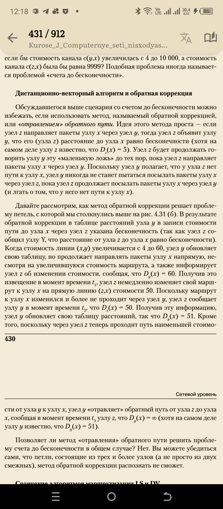
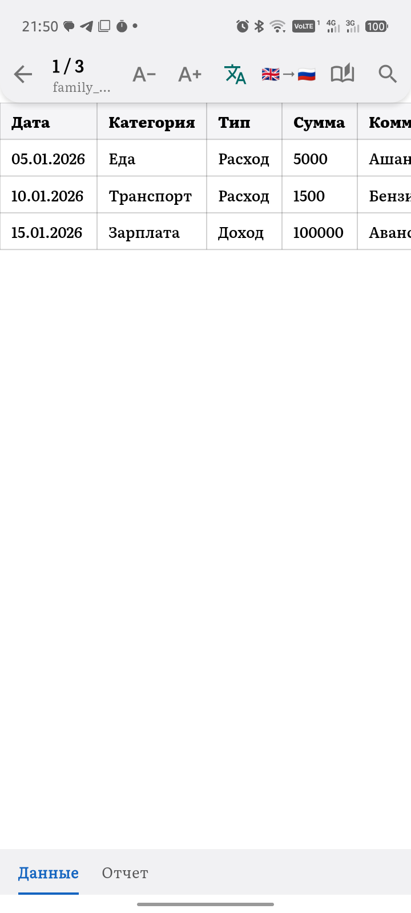
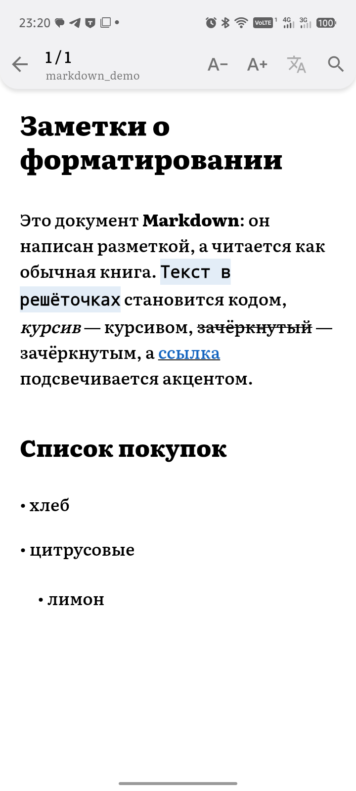
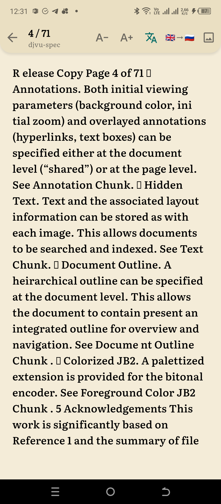
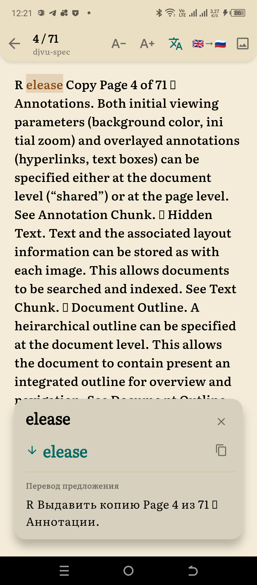
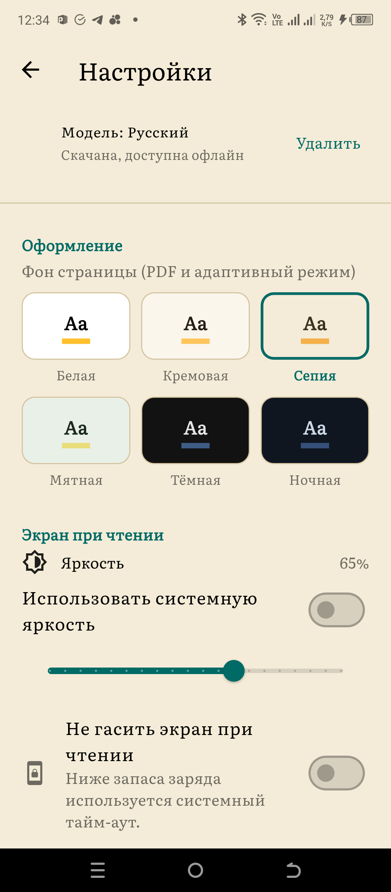
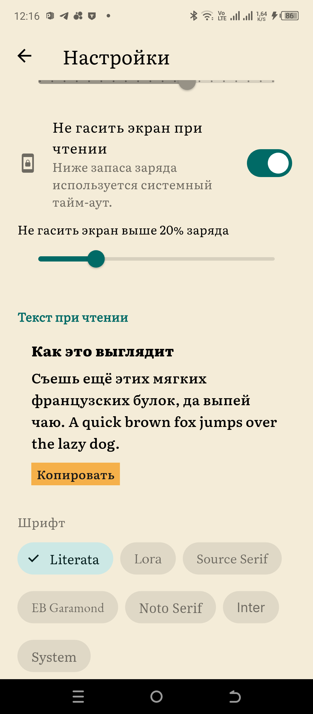

Читалка документов с адаптивным текстом и офлайн-переводом
Полное руководство
Talistra1/9
Библиотека и импорт
Нажмите «Добавить книгу» и выберите файл. Talistra определяет формат по расширению и содержимому файла, добавляет книгу в библиотеку и запоминает место чтения.
Поддерживаются PDF, DjVu и DJV, EPUB, FB2, DOCX, RTF, TXT, Markdown (MD), а также таблицы XLSX и XLS.
ZIP-архив открывается как контейнер: Talistra предложит выбрать книгу внутри.
Файлы можно открыть из проводника Android через «Открыть с помощью Talistra».
Долгое нажатие на книгу позволяет закрепить ее сверху или удалить из библиотеки.
Talistra2/9
Чтение PDF и DjVu
В оригинальном режиме документы показаны непрерывной вертикальной лентой: страницы плавно прокручиваются одна за другой, как в PDF-ридере, без резких боковых перелистываний.
Нажмите номер страницы в шапке, чтобы перейти к нужной странице.
Кнопки с лупами меняют масштаб. При увеличении можно свободно панорамировать страницу.
Ползунок справа показывает текущую страницу и помогает быстро перемещаться по большому документу.
DjVu использует такой же режим прокрутки, зума и оформления, как PDF.

Talistra3/9
Таблицы XLSX и XLS
Книга открывается в компактном режиме: таблица разбита на страницы по ширине телефона. Кнопка с книгой в шапке переключает ее в оригинальную сетку листа.
Лист прокручивается в обе стороны и увеличивается двумя пальцами.
Рисуются только видимые строки и столбцы, поэтому большая таблица листается без задержек.
Вкладки внизу переключают листы, а позиция и масштаб сохраняются.
Поиск, перевод, размер текста и темы оформления работают здесь так же, как в PDF и DjVu.

Talistra4/9
Markdown
Файл .md читается как оформленный текст, а не как размеченный: заголовки крупнее обычного текста, списки — со своими метками, цитаты — с вертикальной полосой слева.
Жирный, курсив, зачёркивание и встроенный код остаются в строке, ссылки подсвечены акцентным цветом.
Код и таблицы показываются моноширинным шрифтом на панели и сохраняют выравнивание автора.
Служебные символы разметки — звёздочки, решётки, угловые скобки — в текст не попадают.
Как и весь адаптивный текст, Markdown листается по страницам, переводится по нажатию и поддерживает поиск.

Talistra5/9
Адаптивный режим
Кнопка с книгой в шапке переключает оригинальную страницу в текст, подогнанный под ширину телефона. Это особенно удобно для чтения с небольшого экрана.
Размер текста меняют кнопки A- и A+ в шапке.
Для EPUB, FB2, DOCX, RTF, TXT, Markdown и таблиц адаптивный режим является основным.
У DjVu адаптивный текст строится из встроенного текстового слоя. Если его нет, оригинальную скан-страницу все равно можно читать и увеличивать.
Долгое нажатие выделяет слово или фразу: появившееся меню предлагает «Копировать», «Копировать всё», «Выбрать всё» и «Перевести».
Кнопка «Ещё» в шапке копирует целиком всю страницу или всю книгу — удобно, когда нужно перенести текст целиком.

Talistra6/9
Офлайн-перевод
Переводчик работает прямо на устройстве. Нажмите слово, чтобы увидеть перевод и предложение; модели выбранных языков скачиваются один раз и затем не требуют интернета.
Языки можно поменять в настройках или быстро переключить в шапке читалки.
Выделение нескольких слов долгим нажатием переводит фразу целиком, а не одно слово.
В оригинальном PDF и DjVu кнопка перевода ведет в адаптивный текст той же страницы, где перевод удобен и точен.
Переводчик можно выключить полностью, оставив чистую читалку.
Экспериментальный синхронный перевод делит адаптивный экран на оригинал и перевод текущего фрагмента.

Talistra7/9
Экран при чтении
В настройках есть отдельный блок для комфортного чтения. Его параметры применяются только пока открыта книга и не меняют привычное поведение телефона в остальных приложениях.
Яркость: выключите «Использовать системную яркость» и выберите значение от 5% до 100%. После выхода из книги вернется системная яркость.
Не гасить экран при чтении: Talistra удерживает экран включенным, пока заряд выше выбранного резерва.
По умолчанию резерв равен 20%. Если заряд ниже порога, или функция выключена, работает обычный системный тайм-аут экрана.

Talistra8/9
Оформление и текст
Настройки позволяют сделать страницу спокойной и читаемой именно для вас. Все изменения сохраняются.
Фон страницы: белый, кремовый, сепия, мятный, темный или ночной.
Шрифты для адаптивного текста: Literata, Lora, Source Serif, EB Garamond, Noto Serif, Inter или системный.
Настройте насыщенность и контраст. Контраст также помогает с бледными сканами PDF и DjVu.
Прогресс, выбранный режим, размер текста и положение в книге сохраняются автоматически.

Talistra9/9
Статистика и приватность
Кнопка статистики на главном экране показывает реальное время чтения и прочитанные страницы.
Смотрите итоги по книгам и по дням.
Быстрое пролистывание не засчитывается: учитывается только время, проведенное на странице.
Книги, прогресс, настройки и скачанные языковые модели остаются на устройстве.
Эту инструкцию можно открыть как обычную книгу из библиотеки в любой момент.